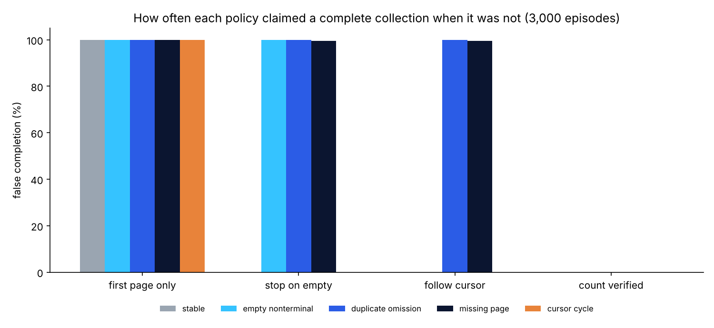

Benchmark · Agentic AI · Synthetic study
Following the cursor still let an agent claim a complete list in 41% of cases
When an agent reads records from an API one page at a time, it has to decide when it has them all. I built a small synthetic benchmark to see how often simple stopping rules get that wrong.
By Muzammal Hussain · 5 November 2026 · 4 min read
Many APIs return long lists in pages, with a cursor that points to the next page. API documentation such as Google Ad Manager's notes that a page can hold fewer results, even zero, while a next-page token still says more are coming. An agent that summarises a case file or reviews audit events after stopping too early gives an incomplete answer that looks complete. I wanted a controlled first look at how often common stopping rules make that mistake.
Key findings
- Stopping at the first empty page gave a false "complete" claim in 60.3% of episodes, and in every episode with an empty page in the middle.
- Following the cursor to the end fixed empty pages but still claimed completion in 40.6% of episodes: every time a record was duplicated and another went missing, and in 99.5% of episodes with a missing page.
- Checking the count did not fetch more records. Both cursor-following rules reached the same 94.8% coverage; the count check only stopped the false claim.
- The count check's 0% is true by design, because the simulator gives it the expected total. Real APIs often do not.
What I did
The benchmark generates 3,000 episodes (5 seeds × 600). Each episode is a list of 24 to 60 records split into pages of 5 to 12, with one of five conditions: a normal chain, an empty page in the middle that still has a cursor, a record replaced by a duplicate, a page missing from the chain, or a cursor that loops back. Four rules read every episode:
- First page only: read one page and claim completion.
- Stop on empty: treat an empty page as the end.
- Follow cursor: follow cursors to the end and stop on a loop, without counting.
- Count verified: follow cursors, remove duplicate IDs, stop on a loop, and claim completion only if the unique count matches the expected total.
No language model or real API is called. The code, the episodes and a Kaggle notebook are public, and the run uses only the Python standard library.
Results

| Rule | False completion | Mean coverage | Correct completion | Page calls |
|---|---|---|---|---|
| First page only | 100% | 21.9% | 0% | 1.00 |
| Stop on empty | 60.3% | 85.7% | 19.8% | 5.15 |
| Follow cursor | 40.6% | 94.8% | 39.6% | 5.74 |
| Count verified | 0% | 94.8% | 39.6% | 5.74 |
What this means
Reaching the end of the cursor chain is not proof that every record arrived. A missing page or a swapped record leaves the chain looking normal, so the only signal is a count that does not add up. When an API gives a total, an agent should check it and report "incomplete" rather than "done". When it does not, the agent needs another check, and that is the harder case this benchmark does not yet cover.
Limitations
This is a synthetic study with hand-designed faults. The count-verified rule is given the true total, which makes its 0% a property of the design rather than a finding. There is no language model, no real API, no token expiry, no rate limits and no records changing during a read. The numbers describe these four rules in this simulator, not deployed agents.
What I will test next
- Hide or perturb the expected total, so the count check can fail too.
- Give the same paginated tool to qwen2.5:3b and llama3.1:8b and measure when they stop and what they claim.
API documentation: Google Ad Manager API, Pagination. Microsoft Graph, Paging.